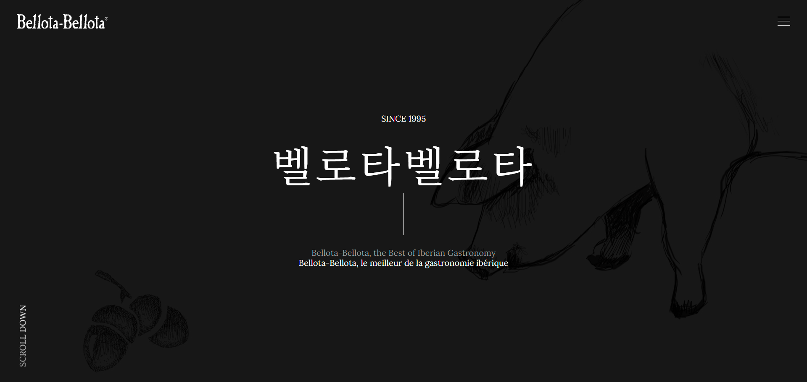
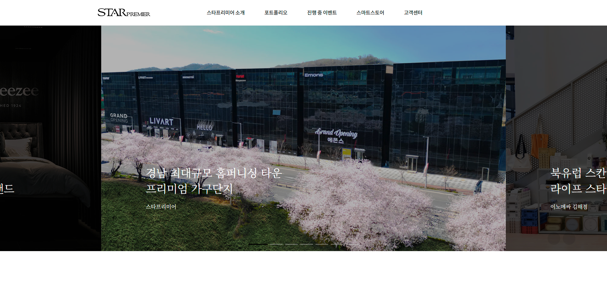

(주)남영
토탈 인테리어 전문기업의 포트폴리오 중심 웹사이트 구축
- - 기간 : 1개월 소요
- - 역할 : 커스터마이징 / 작업물 업로드 - 링크 : https://nyin.co.kr
강소기업진흥협회
연구소 사후관리를 지원하는 협회의 랜딩페이지 구축
- - 기간 : 2주 소요
- - 역할 : 시안 / 퍼블리싱 - 링크 : http://kangsornd.dothome.co.kr
동물세포실증지원센터
동물세포기반 백신·바이오 생산 지원 기관 웹사이트 구축
- - 기간 : 2개월 소요
- - 역할 : 시안 / 퍼블리싱 - 링크 : https://kbiocmo.or.kr
부산학교식자재사업협동조합
발주시스템 로그인 후 입력화면 및 발주 양식 등 퍼블리싱
- - 기간 : 1개월 소요
- - 역할 : 시안 / 퍼블리싱 - 링크 : https://www.bsfsbc.com
강소기업개발진흥원
ISO 전문가 양성기관 랜딩페이지 구축
- - 기간 : 2주 소요
- - 역할 : 시안 / 퍼블리싱 - 링크 : http://kangsobest.dothome.co.kr
스타프리미어
김해 가구 단지 카페24기반 홈페이지형 웹사이트 제작
- - 기간 : 1개월 소요
- - 역할 : 카페24 템플릿 커스터마이징 - 링크 : https://starprm.com
주주씨앗
씨앗 전문 쇼핑몰 ‘주주씨앗’의 온라인 쇼핑몰 구축
- - 기간 : 1개월 소요
- - 역할 : 카페24 템플릿 커스터마이징 - 링크 : https://jujuseed.cafe24.com
벨로타 벨로타
프랑스 샤퀴테리 영카트 기반 홈페이지형 웹사이트 제작
- - 기간 : 2-3개월 소요
- - 역할 : 시안 / 퍼블리싱 / 영카트 커스터마이징 - 링크 : https://www.bellota-bellota.co.kr

벨로타 벨로타
2024.06 - 2024.08 (3개월)
-
Q. 이 프로젝트에서 맡은 역할은 무엇이었나요?
- - 브랜드 톤앤매너를 반영한 디자인 기획 및 시안 제작
- - 그누보드 기반 쇼핑몰의 UI 구조 설계 및 사용자 흐름 최적화
- - 반응형 웹 퍼블리싱 및 UI/UX 디테일 구현
-
Q. 작업하면서 어떤 점이 가장 도전적이었나요?
- 기존에는 에이전시 특성상 정해진 틀을 활용해 작업하는 경우가 많았지만, 이번 프로젝트는 처음으로 제가 직접 기획하고 구조를 설계한 점이 가장 도전적이었습니다. 페이지 수가 많은 장기 프로젝트였기 때문에 CSS를 모듈화하고 중복을 줄여 퍼포먼스를 개선하는 데에도 신경을 많이 썼습니다.
- 또한, 그누보드 테마를 커스텀한 것은 처음이었는데, 이 기회를 통해 다양한 PHP 구조를 접할 수 있었고 게시판을 생성하거나 이동하는 방법도 새롭게 배울 수 있었습니다.
-
Q. 결과는 어땠나요?
- 클라이언트 측에서 고급 식품 브랜드의 이미지를 잘 살린 디자인이라고 긍정적인 평가를 받았고, 그 결과 백화점 리플렛 디자인 작업까지 추가로 수주하게 되었습니다.
- 단순 퍼블리싱을 넘어 브랜드 아이덴티티를 구축하는 브랜딩 작업의 중요성을 깨닫게 된, 개인적으로도 의미 있는 프로젝트였습니다.

스타프리미어
2024.10 - 2024.11 (1개월)
-
Q. 이 프로젝트에서 맡은 역할은 무엇이었나요?
- - 카페24 템플릿 커스터마이징
- - 회사소개 및 브랜드 관련 서브페이지는 직접 하드코딩하여 구현
- - 추후 쇼핑몰 기능 활성화를 고려한 구조로 유연하게 구성
-
Q. 작업하면서 어떤 점이 가장 도전적이었나요?
- 클라이언트가 이미 구매한 카페24 쇼핑몰 템플릿을 기반으로 작업해야 했기 때문에, 쇼핑 기능을 비활성화하고 일반 홈페이지 형태로 커스터마이징하는 과정이 가장 도전적이었습니다.
- 쇼핑몰 구조를 유지하면서도 사용자에게는 기업 홈페이지처럼 보이도록 구성해야 했기 때문에, 레이아웃과 기능의 조화를 맞추는데 신경을 많이 써야 했습니다. 제한된 템플릿 구조 안에서 원하는 디자인과 기능을 구현하기 위해 많은 테스트와 세심한 코드 수정이 필요했습니다.
-
Q. 결과는 어땠나요?
- 카페24의 기본 구조나 모듈에 대해 깊이 있게 다뤄본 적이 없었는데, 이번 프로젝트를 통해 전체적인 코드 구조와 모듈 시스템에 대해 많이 공부하고 이해하게 되었습니다. 다양한 기능을 수정하고 직접 구현하면서 실무적인 역량도 함께 향상되었습니다.
- 또한 클라이언트의 다양한 요구사항을 듣고 반영하는 과정을 통해, 소통과 유연한 대응의 중요성을 다시 한 번 느꼈습니다. 결과적으로 원하는 방향에 맞춰 잘 마무리할 수 있었고, 실무 경험 측면에서도 큰 의미가 있는 프로젝트였습니다.
-
Info
- 김 규 리
- 1989.03.12
- 010-8509-9860
- solcasa8789@gmail.com
- https://github.com/solcasa Tool
- - HTML / CSS / Javascript / Jquery
- - Figma / Photoshop / Illustrator
-
Education
- 부산외국어대학교 스페인어/영어전공 졸업
- 그린컴퓨터아카데미 UI·UX 반응형 웹디자인 & 웹퍼블리셔 과정수료 Experience
- 이엔엠커뮤니케이션 (2024.03 ~ 2025.03, 1년)
- - 웹사이트 제작 및 유지보수
- - 카페24, 그누보드 템플릿 커스텀
- - 그외 sns 컨텐츠, 병원 팝업관리
- 링크오브투데이 (2023.09 ~ 2023.11, 3개월)
- - 콘텐츠 리워드 플랫폼 '보물찾기' 앱/웹 기획 및 UI·UX 디자인
- - 광고 디자인 초안 및 제안서 제작
- - 그외 영업지원 데이터 수집 및 사업설명회 진행
- 홈쇼핑, 소셜커머스 등 다양한 온라인 판매처 관리 경험 보유